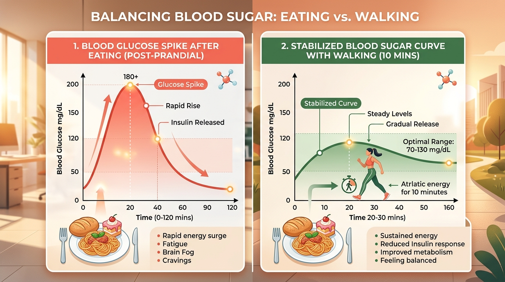
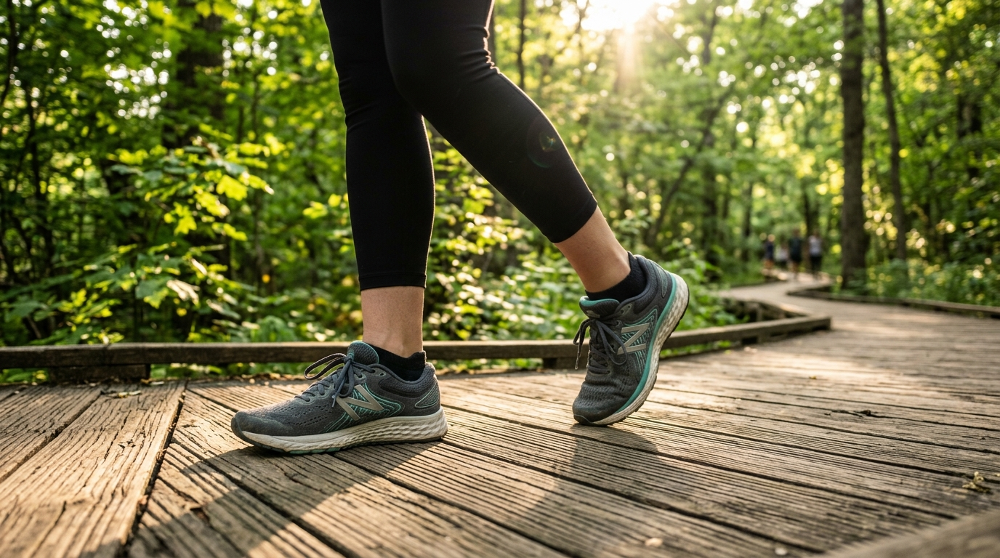
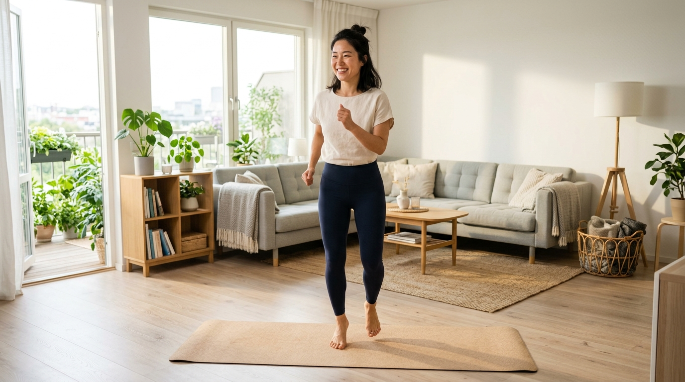
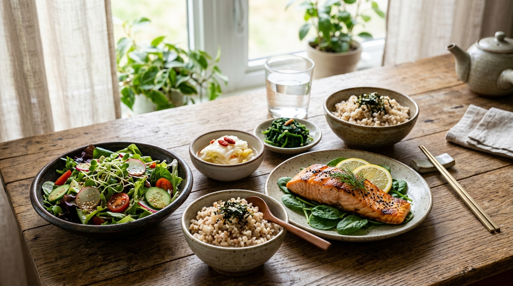

점심이나 저녁을 든든하게 먹고 난 직후, 마치 수면제를 먹은 것처럼 머리가 멍해지고 눈꺼풀이 천근만근 무거워지는 경험을 누구나 한 번쯤 해보셨을 것입니다. 흔히 '배가 불러서 오는 단순한 식곤증'이라고 가볍게 넘기기 쉽지만, 현대 의학과 내분비대사학 연구에 따르면 이는 혈액 속 포도당이 폭발적으로 치솟는 '혈당 스파이크(Blood Glucose Spike)'가 보내는 강력한 경고 신호입니다.
식사 후 가만히 소파에 눕거나 의자에 등을 기대고 앉아 있으면 섭취한 탄수화물이 빠르게 포도당으로 분해되어 혈관으로 쏟아져 들어옵니다. 이때 췌장은 혈당을 떨어뜨리기 위해 과도한 양의 인슐린을 급격히 분비하고, 그 결과 혈당이 롤러코스터처럼 곤두박질치며 극심한 피로감, 집중력 저하(브레인 포그), 가짜 식욕을 유발하게 됩니다. 더욱 치명적인 것은 이렇게 남은 잉여 포도당이 고스란히 '내장지방'으로 축적된다는 사실입니다.
하지만 놀랍게도 이 치명적인 악순환을 단번에 끊어내는 가장 강력하고 과학적인 해결책이 있습니다. 거창한 헬스장 운동도, 힘든 고강도 러닝도 아닌 '식후 딱 10분 가볍게 걷기'입니다. 오늘 꿀단지에서는 운동생리학과 미국당뇨병학회(ADA)의 최신 임상 데이터를 바탕으로, 식후 10분 걷기가 췌장 부담을 덜고 내장지방을 차단하는 과학적 원리와 실생활 실천법을 총정리해 드립니다.
1. 식후 10분 걷기가 혈당 스파이크를 막는 인슐린-근육 대사 기전
우리가 음식을 먹으면 위와 소장에서 소화 과정을 거쳐 혈액으로 포도당이 유입됩니다. 평소 안정 상태에서는 췌장에서 분비된 '인슐린(Insulin)'이라는 열쇠가 있어야만 포도당이 세포 문을 열고 들어가 에너지로 쓰일 수 있습니다. 만약 인슐린이 제때 처리하지 못하면 남은 당분은 간과 내장 주변에 지방 형태로 차곡차곡 쌓이게 됩니다.

그런데 식후에 가볍게 걷기 시작하면 인체의 놀라운 '비인슐린성 포도당 흡수 기전(GLUT4)'이 가동됩니다. 우리 몸 전체 근육량의 70% 이상을 차지하는 허벅지(대퇴사두근)와 종아리(가자미근), 둔근이 수축과 이완을 반복하면서, 인슐린의 도움을 거의 받지 않고도 혈액 속의 포도당을 스펀지처럼 직접 빨아들여 에너지로 연소시킵니다.
스포츠의학 저널에 발표된 메타 분석 연구에 따르면, 식사 후 가만히 앉아 있을 때와 비교하여 식후 10~15분 동안 가벼운 산책을 했을 때 최고 혈당 수치가 평균 25~35%가량 현저하게 감소하는 것으로 나타났습니다. 췌장이 땀 흘려 인슐린을 과다 분비할 필요가 없어지므로 췌장 베타세포가 보호되고, 인슐린 저항성과 당뇨병 위험이 획기적으로 낮아지는 것입니다.
2. [비교 분석표] 식후 10분 걷기 vs 식후 눕기/가만히 앉아있기 생체 반응 비교
식사 후 단 10분을 어떻게 보내느냐에 따라 혈관 내 환경과 체지방 축적률은 완전히 갈리게 됩니다. 아래 표를 통해 생체 반응의 명확한 차이를 확인해 보세요.
| 구분 항목 | 식후 10분 걷기 (산책 루틴) | 식후 눕기 / 소파 휴식 | 식후 의자 고정 착석 |
|---|---|---|---|
| 혈당 최고점 (Peak) | 완만한 곡선 (정상 범위 유지) | 급격한 스파이크 (180mg/dL+) | 지속적인 고혈당 유지 |
| 인슐린 분비량 | 필요 최소량 분비 (췌장 보호) | 과다 분비 (췌장 피로 누적) | 과다 분비 및 저항성 유발 |
| 식곤증 & 피로감 | 뇌 산소 공급으로 활력 증진 | 극심한 졸음 및 두통 유발 | 무기력증, 브레인 포그 발생 |
| 잉여 칼로리 처리 | 근육 대사 에너지로 즉시 연소 | 복부 내장지방 및 간지방 전환 | 중성지방 전환율 급증 |
| 위장 소화 작용 | 위장 연동운동 촉진 (가스 배출) | 역류성 식도염 위험 급상승 | 소화 지연 및 복부 팽만감 |
3. 밥 먹고 몇 분 뒤에 걸어야 할까? 혈당 관리 3대 골든타임 수칙
식후 걷기에도 가장 효율적인 '골든타임'과 올바른 강도가 존재합니다. 잘못된 타이밍이나 지나친 고강도 운동은 오히려 소화를 방해하고 혈당을 올릴 수 있으므로 3가지 핵심 수칙을 반드시 기억해야 합니다.

4. 비 오는 날 & 회사 사무실에서 끝내는 '실내 제자리 걷기 & 까치발 루틴'
바깥 날씨가 궂거나 회사 사무실에서 외부로 나갈 여건이 되지 않는다고 해서 포기할 필요는 없습니다. 실내에서도 하체 대근육을 자극하여 야외 산책의 80% 이상 효과를 내는 2가지 실내 대안 루틴이 있습니다.

💡 실내 초간단 10분 프로토콜
- 1. 실내 무릎 제자리 걷기 (5분): 양팔을 가볍게 흔들며 무릎을 골반 높이까지 천천히 올렸다 내리는 동작을 5분간 반복합니다. 복부 코어와 대퇴사두근이 자극됩니다.
- 2. 가자미근 까치발 올리기 (Calf Raise 3분): 벽이나 의자를 잡고 발뒤꿈치를 천천히 들어 올렸다가 바닥에 닿기 직전까지 내립니다. 종아리 안쪽의 가자미근은 혈액 속 포도당과 지질을 집중 연소하는 특수 근육입니다.
- 3. 기지개 및 가벼운 복식호흡 (2분): 양손을 머리 위로 뻗어 가슴을 열고 천천히 들이마시고 내쉬며 혈류 순환을 마무리합니다.
5. 혈당 안정 효과 2배 높이는 '거꾸로 식사 순서' (채소 ➔ 단백질 ➔ 탄수화물)
식후 10분 걷기와 함께 병행했을 때 시너지 효과가 폭발하는 식사법이 바로 '식사 순서 바꾸기(Food Sequencing)'입니다. 같은 양의 밥과 반찬을 먹더라도 입에 들어가는 순서만 바꾸면 위장에서 당분이 흡수되는 속도를 획기적으로 늦출 수 있습니다.

1단계: 식이섬유 (채소, 샐러드, 나물류)를 식사 시작 후 5분간 먼저 꼭꼭 씹어 먹습니다. 식이섬유가 위장 내벽에 끈적한 그물망을 형성하여 뒤이어 들어올 포도당의 흡수 속도를 완만하게 만듭니다.
2단계: 단백질 및 건강한 지방 (고기, 생선, 두부, 달걀)을 섭취합니다. 단백질은 인크레틴(GLP-1) 호르몬 분비를 촉진해 위장 배출 시간을 지연시키고 포만감을 오래 지속시켜 줍니다.
3단계: 탄수화물 (밥, 빵, 면)을 맨 마지막에 반찬과 곁들여 먹습니다. 이미 채소와 단백질로 위장이 채워져 있어 탄수화물 섭취량 자체가 자연스럽게 줄어들고, 혈당이 완만하게 오르게 됩니다. 식사 후 미온수 한 잔을 마신 뒤 가볍게 10분 걷는 것으로 완벽한 혈당 방어벽이 완성됩니다.
* 대한당뇨병학회(KDA) 당뇨병 진료지침 (생활습관 교정 및 식후 운동 프로토콜)
* 미국스포츠의학회(ACSM) Exercise and Type 2 Diabetes 임상 가이드라인
🌅 아침 공복 루틴 가이드: 체지방 감량과 활력을 돕는 기상 1시간 습관
기상 직후 미온수 한 잔부터 림프 순환 스트레칭까지, 하루 컨디션을 바꾸는 아침 20분 루틴.
자주 묻는 질문 (FAQ)
Q1. 식후 걷기는 밥 먹고 정확히 몇 분 뒤에 시작하는 것이 가장 좋나요?
식사를 마친 직후부터 혈당이 가파르게 상승하기 시작하는 식후 15분~30분 이내에 걷기 시작하는 것이 가장 이상적입니다. 혈당이 이미 정점(식후 60분)에 도달하기 전에 근육을 움직여야 포도당이 지방으로 전환되는 것을 차단할 수 있습니다.
Q2. 식후에 달리기나 빠른 속보 등 고강도 운동을 해도 괜찮나요?
식후 고강도 운동은 위장으로 가야 할 혈류를 근육으로 급격히 빼앗아 소화불량을 유발하고, 교감신경과 코르티솔 분비를 촉진해 오히려 혈당을 급상승시킬 수 있습니다. 옆 사람과 편안하게 대화할 수 있는 산책 강도(Zone 1~2)가 가장 적합합니다.
Q3. 비가 오거나 회사에 있을 때는 어떻게 식후 걷기를 실천하나요?
사무실 복도나 거실에서 10분 동안 무릎을 가볍게 들어 올리는 '실내 제자리 걷기'나 의자에 앉아 종아리 근육을 자극하는 '가자미근 까치발 올리기'만으로도 야외 산책의 약 70~80%에 달하는 혈당 안정 효과를 얻을 수 있습니다.
Q4. 식사 직후 커피나 탄산음료를 마시는 것은 혈당에 어떤 영향을 주나요?
식사 직후 마시는 액상과당 음료나 믹스커피는 혈당 스파이크를 극대화하며, 카페인은 일시적으로 인슐린 감수성을 떨어뜨릴 수 있습니다. 식후에는 미온수 1잔을 마시며 가볍게 걷는 것이 위장과 혈당 안정에 최선입니다.
Q5. 하루 1시간 몰아서 걷는 것과 끼니마다 10분씩 걷는 것 중 무엇이 더 효과적인가요?
미국당뇨병학회(ADA) 연구에 따르면, 하루 한 번 몰아서 45분 걷는 것보다 아침·점심·저녁 매 끼니 직후 10~15분씩 나누어 걷는 분할 걷기가 24시간 평균 혈당 수치를 낮추고 인슐린 저항성을 개선하는 데 훨씬 탁월합니다.
독자 댓글 (0)